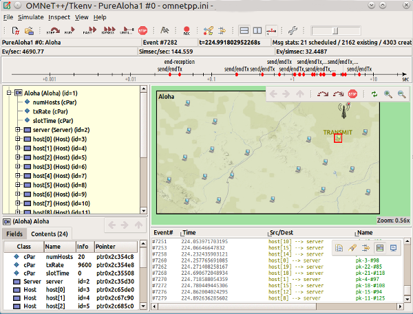
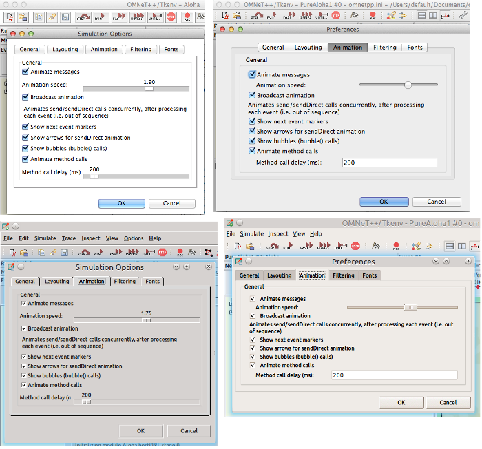
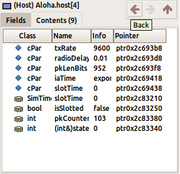
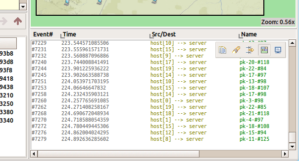
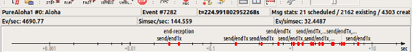
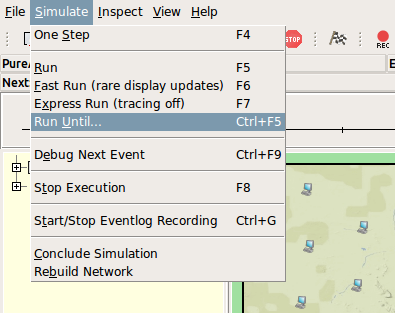

The focus of version 4.5 was to improve the usability of the graphical runtime environment (Tkenv).
The Tkenv GUI has been redesigned for single-window mode to improve usability and user experience. New inspector windows can still be opened, and they are kept always above the main window.

Tkenv has also received a new, modern look and feel, due to the use of the Ttk widgets and a custom Ttk theme. This makes a huge difference in looks on all platforms, but especially on OS X. See before (left) and after (right) screenshots.

Inspectors are no longer tied to a single object and visited objects are remembered as navigable history (back/forward/up). Local toolbars were added to the upper right corner of the inspectors with navigation and other context aware actions.

Tkenv now stores message sendings and also a clone of corresponding message objects (cMessage), and can show them in the log window. Message printer classes can be contributed to customize the content of the log lines. Switching between the module log and the message trace is possible using the local toolbar in the log inspector window.

The status area is more concise now (two rows instead of three), and shows more information at the same time. A part of the status area can be turned off to free up vertical space (Ctrl+D).

We have reorganized the main menu, removed obsolete menu items and added numerous smaller improvements: additional hotkeys (Ctrl+Plus/Minus for Zoom, Ctrl+F5 Run Until, Ctrl+Q Quit); on-demand scrollbars (i.e. they are hidden when not needed); module graphics now remembers zoom level and settings per NED type; etc.

Other Tkenv Improvements:
Bugs fixed: http://tinyurl.com/omnetpp45-fixes